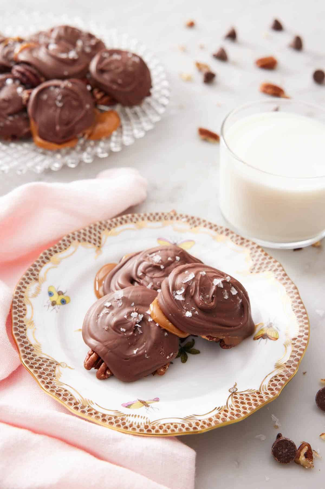

Turtles candies

Description
Try this turtle candy recipe that will make you feel like you’re
in your favorite childhood candy shop. The chewy caramel and pecan
clusters are a perfect blend of sweet and salty for any special
event. This pecan turtles recipe is made in just six easy steps and
without the use of a candy thermometer, which means there’s no need
to melt brown sugar at the perfect medium heat. With just 5 simple
ingredients, the chocolatey, nutty, and buttery flavors of this
decadent dessert are almost effortless.
Ingredients
- 2 cups pecan halves toasted (240g)
- ½ (11-ounce/311g) bag soft caramels unwrapped
- 1½ tablespoons heavy cream
- 1 cup milk chocolate chips (170g)
- Flakey sea salt (optional)
Directions
- Line two baking sheets with parchment paper. Cluster the pecans in small piles of
3 to 5 nuts per pile on the prepared sheet pans.
- In a small microwave-safe bowl, heat the caramels and heavy cream in the microwave,
stirring every 15 seconds until smooth, about 2 minutes. Top each pecan pile with a
spoonful of melted caramel (about ½ tablespoon).
- In a small microwave-safe bowl, heat the chocolate chips in the microwave, stirring
every 15 seconds until smooth. Top each pecan pile with a small spoonful of chocolate.
Sprinkle the tops with flakey sea salt, if you’d like. Let the chocolate set, about 20
minutes, before serving.